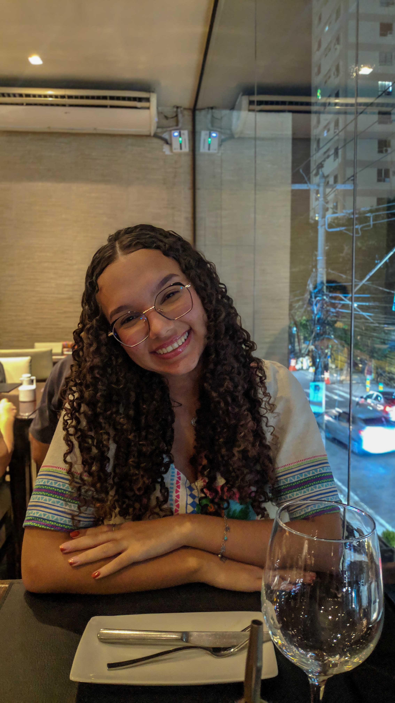
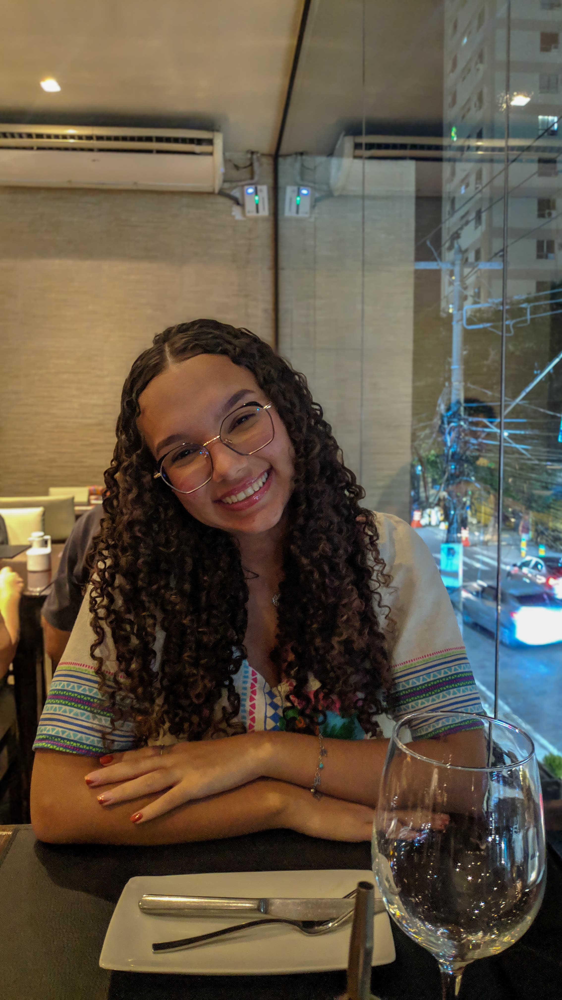
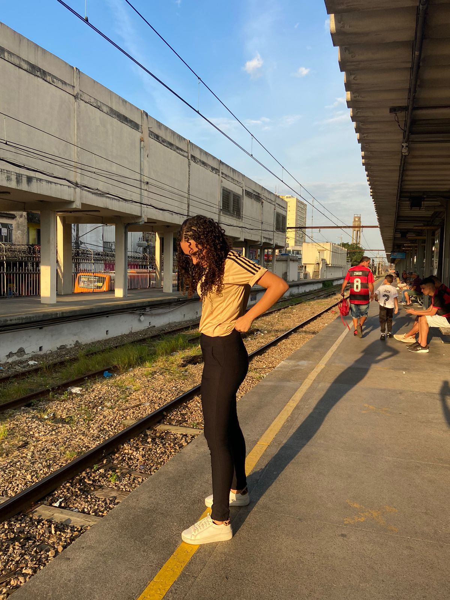
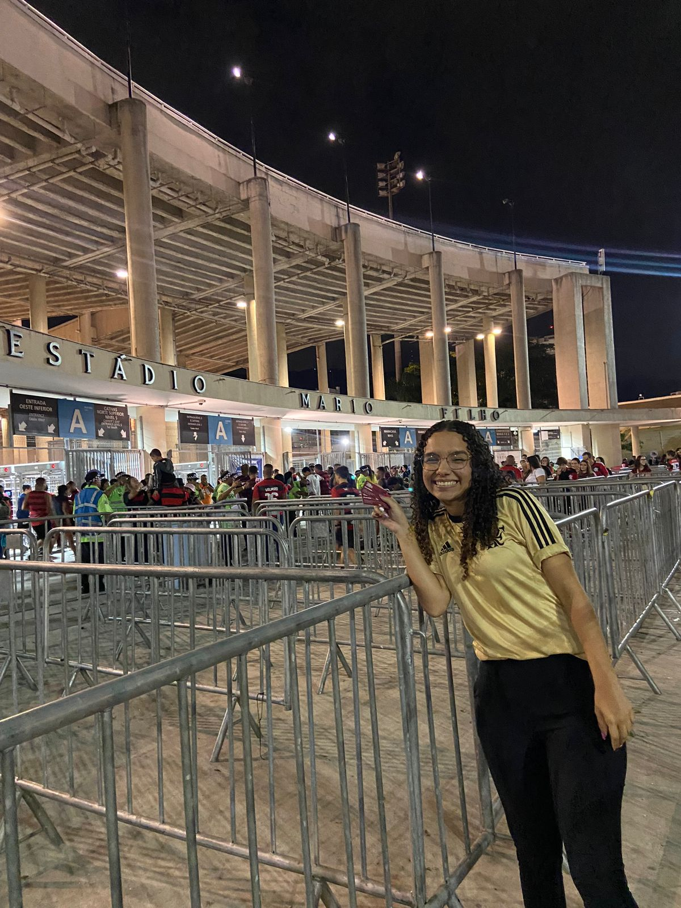
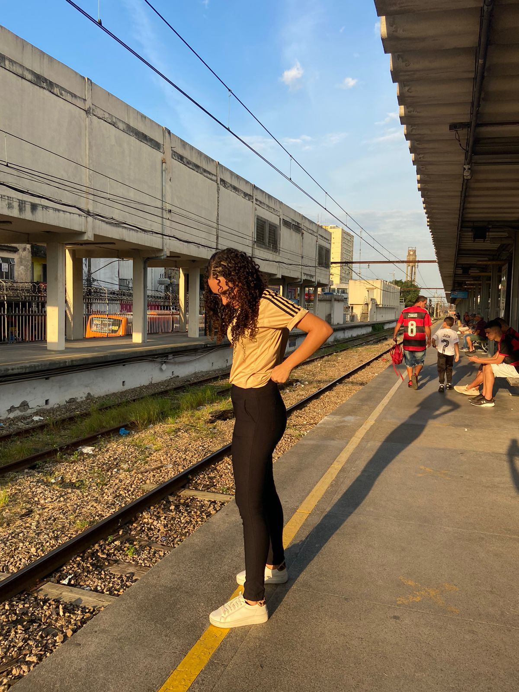
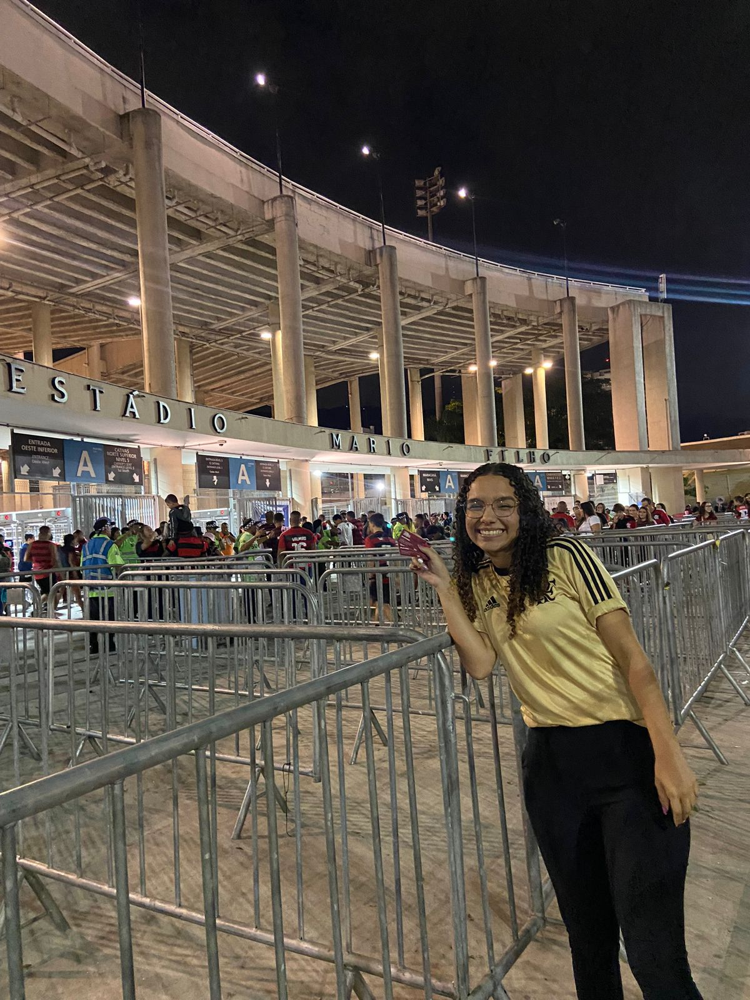

Meu Lar - Feliz Natal
Meu Lar
 



 





"Quando estou tendo um dia ruim e exaustivo, sempre olho pra aliança e lembro de nós, e em um instante... eu melhoro."
"Quando a gente se viu pela primeira vez
eu não sabia nem onde pôr as mãos
agora tudo mudou me acostumei contigo perto
quando você vai pra longe não sei onde enfiar a cabeça"
"eu namorava teu sorriso antes mesmo de você me namorar."
“há algo em você cujo as palavras não são capazes de descrever, mas todo o meu corpo sente ao te ver.”
“te chamaria de meu bem visto que a sua existência me faz um bem absurdo, eu poderia te chamar de meu amor, poderia também te chamar de vida, meu tudo, anjo, docinho, pois você é a personificação dessas coisas todas, mas continuarei te chamando pelo seu nome, é tão bonito.”
“Se eu tivesse um bar ele teria o seu nome
Se eu tivesse um barco ele teria o seu nome
Se eu comprasse uma égua daria a ela o seu nome
Minha cadela imaginária tem o seu nome
Se eu enlouquecer passarei as tardes repetindo o seu nome
Se eu morrer velhinho, no suspiro final balbuciarei o seu nome
Se eu for assassinado com a boca cheia de sangue gritarei o seu nome
Se encontrarem meu corpo boiando no mar no meu bolso haverá um bilhete com o seu nome
Se eu me suicidar ao puxar o gatilho pensarei no seu nome
Às vezes as nuvens quase formam o seu nome
Olhando as estrelas é sempre possível desenhar o seu nome
O último verso do famoso poema de Éluard poderia muito bem ser o seu nome
Apollinaire escreveu poemas a Lou porque na loucura da guerra não conseguia lembrar o seu nome
Não entendo por que Chico Buarque não compôs uma música para o seu nome
Se eu tiver uma filha ela terá o seu nome
Minha senha do e-mail já foi o seu nome
Minha senha do banco é uma variação do seu nome
Tenho pena dos seus filhos porque em geral dizem “mãe” em vez do seu nome
Tenho pena dos seus pais porque em geral dizem “filha” em vez do seu nome
Tenho muita pena dos seus ex-maridos porque associam o termo ex-mulher ao seu nome
Tenho inveja do oficial de registro que datilografou pela primeira vez o seu nome
Quando fico bêbado falo muito o seu nome
Quando estou sóbrio me controlo para não falar demais o seu nome
É difícil falar de você sem mencionar o seu nome
Uma vez sonhei que tudo no mundo tinha o seu nome
Coelho tinha o seu nome xícara tinha o seu nome teleférico tinha o seu nome
No índice onomástico da minha biografia haverá milhares de ocorrências do seu nome
Na foto de Korda para onde olha o Che senão para o infinito do seu nome?
Algumas professoras do CEFET seriam menos amargas se tivessem o seu nome
Detesto o estágio porque me impede de me concentrar no seu nome
No cabo da minha bengala gravarei o seu nome
Não posso ser niilista enquanto existir o seu nome
Não posso ser anarquista se isso implicar a degradação do seu nome
Não posso ser comunista se tiver que compartilhar o seu nome
Não posso ser fascista se não quero impor a outros o seu nome
Não posso ser capitalista se não desejo nada além do seu nome
Quando saí da casa dos meus pais fui atrás do seu nome
Morei três anos num bairro que tinha o seu nome
Espero nunca deixar de te amar para não esquecer o seu nome
Espero que você nunca me deixe para eu não ser obrigado a esquecer o seu nome
Espero nunca te odiar para não ter que odiar o seu nome
Espero que você nunca me odeie para eu não ficar arrasado ao ouvir o seu nome
A literatura não me interessa tanto quanto o seu nome
Quando a poesia é boa é como o seu nome
Estou cansado da vida, mas isso não tem nada a ver com o seu nome
Estou escrevendo o quadragésimo oitavo verso sobre o seu nome
Talvez eu não seja um poeta a altura do seu nome
Por via das dúvidas vou acabar o poema sem dizer explicitamente o seu nome”
“Teu amor é como a chama que ilumina o que há de mais escuro em mim.”
“Não há ninguém, mesmo sem cultura, que não se torne poeta quando o amor toma conta dele.”
"Anseio ser o sorriso que dança em teus lábios, a brisa suave que acaricia teu rosto. Quero pintar em tua vida os tons mais belos, ser a razão pela qual teu coração se aquece e tua alma encontra paz."
“No amor, um mais um é igual a um.”
“Tens o perfume das manhãs e o riso dos dias mais belos.”
“O amor é isso: o que você é para mim, e o que eu sou para você.”
“Assim que a luz do teu olhar pousou em mim, todo o universo se iluminou.”
“Vivo em você e para você, pois sem você, minha existência é cinza.”
“Tens meu sorriso, meu silêncio, minha lágrima. Tudo que é meu, te pertence.”
“O que é verdadeiro nunca se acaba, ele vive para sempre no coração.”
"Quando penso no futuro, é contigo que me imagino, dividindo os dias simples, as noites tranquilas, e todo aquele silêncio que só a gente sabe ouvir. porque, no fim, é em ti que sempre vou querer ficar."
"Ainda que eu tivesse o poder de te criar à minha maneira, eu escolheria sempre te amar exatamente como és."
"Em cada encontro de olhares, há um universo esperando para acontecer."
"Mesmo sem te tocar, sinto-te em cada fibra da minha existência."
"É por ti que a minha canção existe; sem ti, o silêncio se faz rei."
"Quero viver o eterno em um único instante ao teu lado."
"Sei que te amei antes de te conhecer, pois eras o sonho que eu nunca soube que tinha."
"Tu és a poesia que habita em minha alma."
"E eu escolheria você; Em cem vidas,Em cem mundos, Em qualquer versão da realidade, Eu te encontraria e Eu escolheria você."
"Meu coração é teu, como as estrelas pertencem ao céu."
"Tu és como a poesia: nunca sei o que me esperas, mas sempre me encantas."
"Teu sorriso é o meu refúgio, e em teus olhos encontro o universo."
"Meus olhos brilham ao te ver, como estrelas que caem e iluminam o céu."
"O simples fato de te ter ao meu lado já faz o mundo parecer mais bonito."
"Te amo não apenas pelo que és, mas pelo que sou quando estou com você."
"Em teus braços encontro o meu lugar no mundo."
"Cada momento ao teu lado é um pedacinho do paraíso que eu sempre sonhei."
"Nada no mundo vale mais a pena do que o amor que eu sinto por você."
"Quando olho nos teus olhos, vejo tudo o que sempre procurei."
"Você é minha inspiração para tudo o que faço e sou."
"Teus beijos são como um bálsamo para minha alma, e o teu abraço é o meu refúgio."
"Você é meu sol em um dia nublado, meu abrigo em dias de tempestade."
"Te amo em todos os sentidos, em todos os momentos, sem fim."
"Eu te amo de uma forma que palavras não conseguem traduzir."
"A cada olhar, a cada toque, sinto que estamos mais próximos do infinito."
"Você é o pedaço de felicidade que faltava na minha vida."
"Eu não sabia o que era amor até você chegar."
"Nosso amor é como um livro: cada página que viramos é um novo capítulo de felicidade."
"Amar você é como respirar: é natural, é essencial, é vida."
“Cada vez que te vejo, meu coração dança uma melodia que só ele conhece, um ritmo acelerado que traduz a alegria de te ter por perto, como se o tempo parasse e só existisse o amor que sinto por ti.”
"Através dos teus olhos, o mundo ganha novas cores, e tudo o que antes era cinza agora reluz como ouro. Contigo, até os dias mais comuns se tornam extraordinários, pois és o prisma que reflete a beleza em tudo que me cerca."
O que eu sinto por você é laranja! Laranja não é uma cor simples. Ele é o encontro do vermelho, que grita paixão, e do amarelo, que sussurra alegria. Não é uma escolha óbvia, porque o laranja carrega em si a ousadia de ser misturado, de ser contraditório, de ser intenso e vibrante sem pedir permissão. O que sinto por você é como laranja: não cabe em definições fáceis, é uma explosão de sentimentos que não têm lógica, mas têm verdade. É aquele tipo de amor que te tira da zona de conforto, que esquenta, incomoda e, ao mesmo tempo, colore tudo ao seu redor.
"Gosto de ouvir o som da sua voz, ela parece silenciar todo o barulho que carrego em mim."
"Gosto de ouvir o som da sua voz, ela parece silenciar todo o barulho que carrego em mim."
O laudo veio como uma prova de amor, mas esse amor já era provado, veio para provar a compreenssão, o cuidado, a lealdade e a cumplicidade.
Não consigo olhar nos seus olhos por muito tempo sem chorar, chorei tanto pra tê-los de volta, seria estranho se não fosse assim agora.
Ontem me encontrei com uma mulher que me proporcionou sentir emoções e relações incríveis e distintas, me senti amigo, namorado, amante, companheiro, protetor, me senti apaixonado, contagiado, risonho e incrivelmente feliz. É muito bom saber que escolhi a mulher certa pra compartilhar esses momentos e compartilhar a minha vida, feliz dia das mulheres minha paixão, obrigado por deixar a minha vida mais bonita com seu sorriso, mais agradável de se escutar com sua voz e mais colorida com sua presença.
Ver a alegria nos seus olhos após pular uma onda, a paz que estava em seus olhos, ver seu sorriso sempre foi apaixonante, mas ver sua felicidade no mar foi restaurador.
Meu futuro tem seu toque e meus dias tem seu cheiro.
esse tem sido meu lugar favorito, feliz ano novo.
Sempre soube que seria difícil te deixar ir, e por vezes brinquei sobre isso durante nosso relacionamento, mas acho que nunca acreditei que fosse embora então nunca me preparei pra isso, foi tudo intenso demais pra mim e infelizmente não resisti, eu te amo, como nunca amei e como nunca amarei. saudades.
Depois da nossa chuva juntos, nunca mais vi um temporal da mesma forma.
Te ver cantando é apaixonante, te ver falando de Deus me encanta.
Entrar com você em uma loja e ficar 1 hora só reclamando do seu gosto duvidoso para roupa, só de pensar em quantas vezes passei por ela de uma ponta a outra sem nem virar o pescoço, mas com você achei beleza e graça em lugares que nunca tinham feito sentido pra mim.
Podia ser só mais um filme, podia ser só mais um cinema, mas foi a gente se olhando apaixonado enquanto na tela um alienígena comia a cabeça das pessoas.
O tempo passa em uma velocidade diferente desde que te conheci, o tempo com você voa, o tempo sem você se arrasta.
A ansiedade antes de te ver e a alegria e a saudade após te deixar sempre se contrastam no meu dia.
Subir sua rua quase correndo mesmo depois de um dia cansativo só por saber que o único descanso que realmente preciso é no seu abraço.
Quando meu nome pra você se tornou "amor" foi a melhor sensação do mundo.
Eu te amo, eu te quero, eu te espero.
Você ainda está nas minhas orações diárias.
Sonho incansavelmente com você nos meu braços.
"Você me encontrará quando voltar, mesmo que esteja mil anos atrasada."(que bom que me encontrou bem antes dos mil anos)
Se eu acreditasse em outras vidas, diria que fui privado de te amar em uma vida passada, justificaria metade do que sinto quando te tenho nos meus braços
A forma como o assunto nunca acaba, o sorriso no meu rosto nunca some e a saudade nunca tem fim me provam que encontrei um amor daqueles de filme